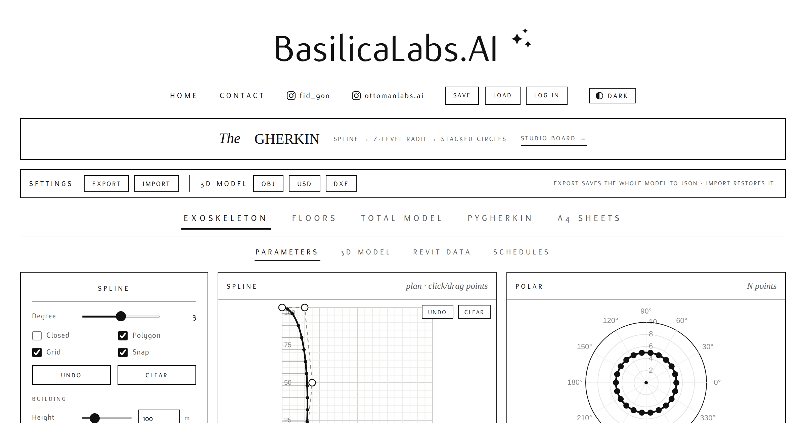
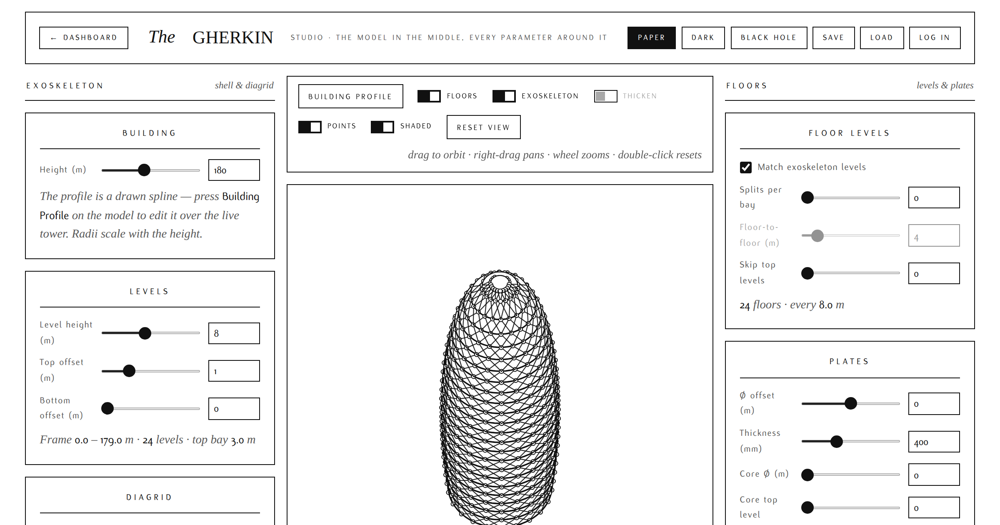
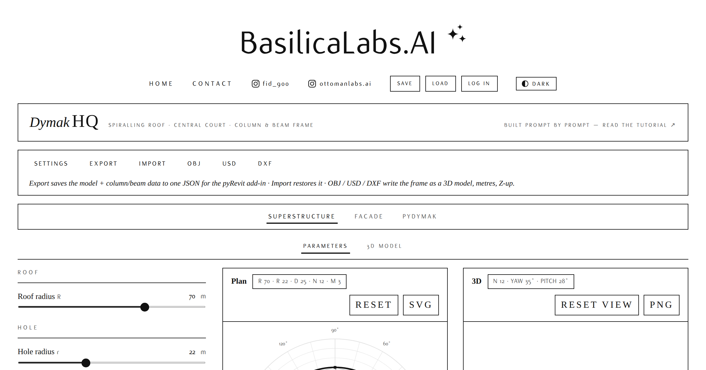
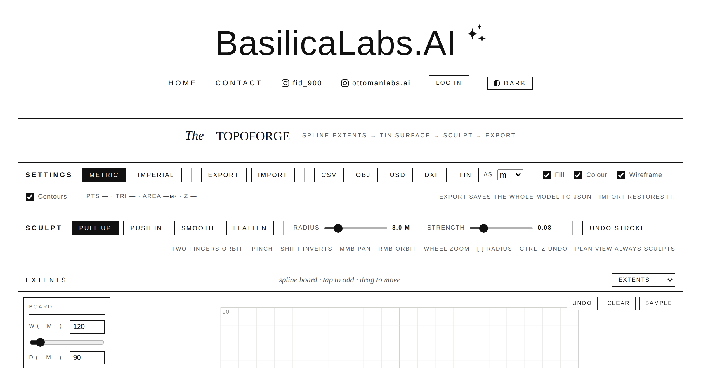
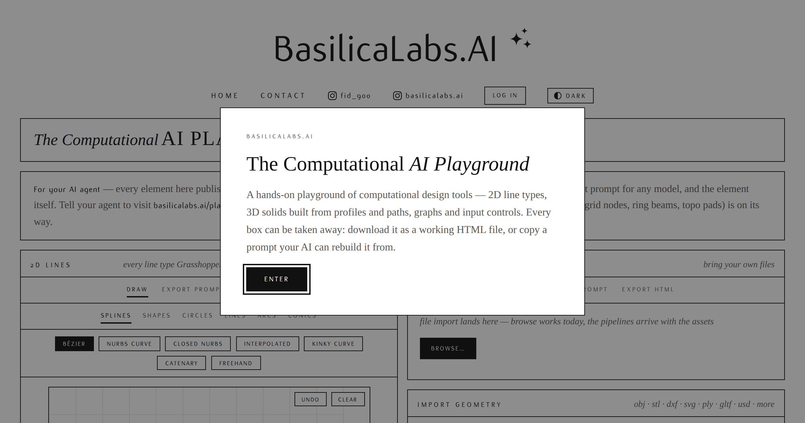
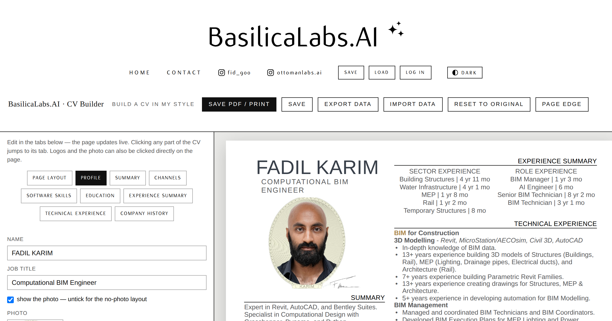

Website DESIGN
every page on this site, designed in-house · Fadil Karim
Every page here is designed in-house — the layouts, the drawn 3D isles, the hairline borders, the ink-on-paper palette, all of it art-directed page by page and built with Claude Code from a plain-English brief. Set in Flux, Newsreader & Prata. Click any design to visit it live.
Dashboards & Studioslive parametric tools — the model in the middle, every parameter around it
ottomanlabs.ai/gherkin

ottomanlabs.ai/gherkin-studio
ottomanlabs.ai/dymak
ottomanlabs.ai/topoforge
ottomanlabs.ai/playground
ottomanlabs.ai/cvbuilder
Ledgers & Roomsreading, records and the occasional field note